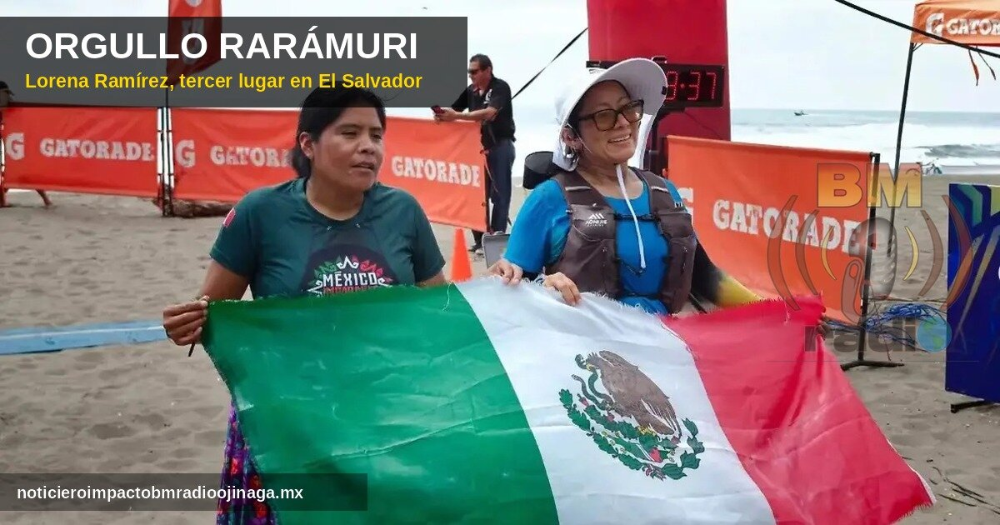
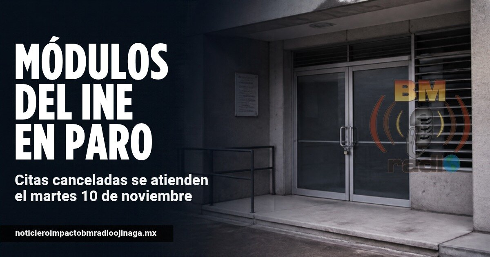
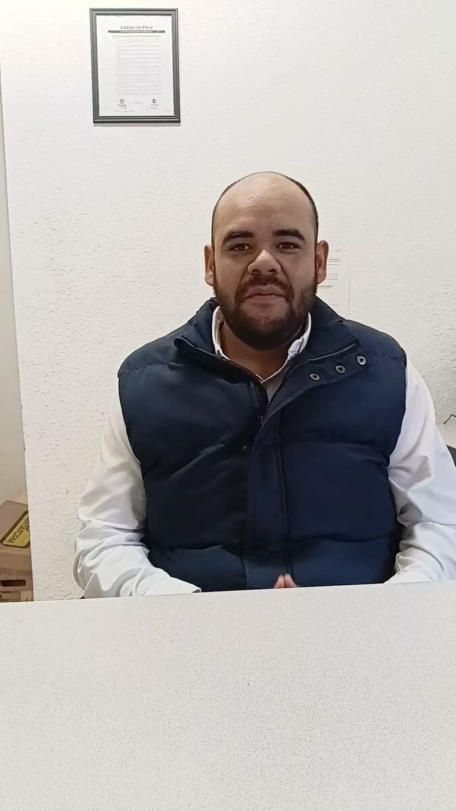
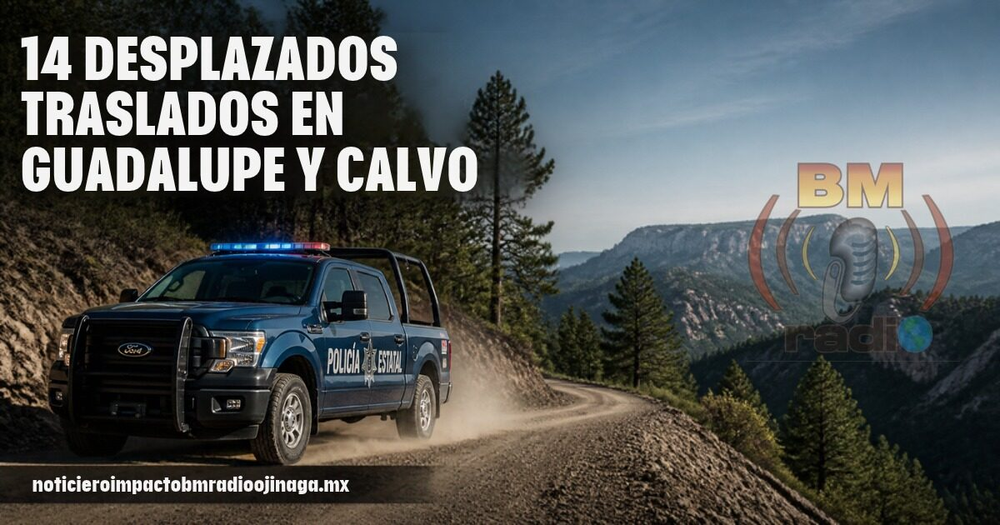
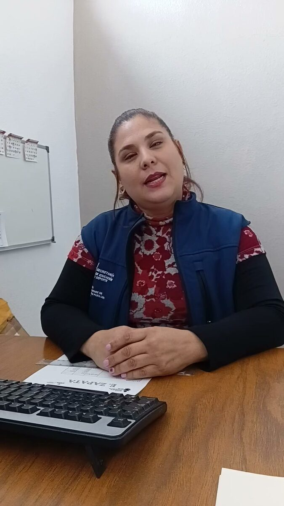

Policiaca
En la Mesa Estatal de Construcción de Paz, la Secretaría de Seguridad Pública del Estado informó que 149 personas señaladas como generadoras de violencia fueron detenidas y que se aseguraron 32 vehículos, 15 de ellos con reporte de robo. En operativos en Coyame, Temósachic, Santa Bárbara y Uruachi se recuperaron 6 vehículos robados y se detuvo a 2 personas armadas. La Fiscalía también pidió cuidarse de los fraudes en línea durante el Buen Fin.
Frontera
La Corte Suprema de Estados Unidos autorizó este lunes que se reanude la construcción del muro fronterizo en la región de Big Bend, incluido el parque nacional, frente a nuestra zona. Por 8 votos contra 1, dejó sin efecto la orden de una jueza federal de El Paso que había frenado la obra en octubre por considerar que el gobierno se excedió al saltarse leyes ambientales. La decisión es temporal mientras sigue el juicio.
Policiaca
Una persecución contra hombres armados movilizó este lunes por la tarde a policías municipales y a otras corporaciones al sur de la ciudad de Chihuahua, por la colonia 3 de Octubre. Según medios locales, los ocupantes de una Dodge Durango negra y una GMC Acadia guinda huyeron de los agentes. Dos hombres fueron detenidos con armas de fuego y otros escaparon a pie. Las dos camionetas fueron aseguradas. No se reportan lesionados. Las autoridades no han informado qué originó la persecución.
Nacional
El Buen Fin 2026 será del viernes 13 al martes 17 de noviembre en todo el país. La Concanaco estima ventas por 235 mil millones de pesos a nivel nacional, un 7.3% más que el año pasado. En la ciudad de Chihuahua, la Canaco espera una derrama de 2 mil 100 millones de pesos. Antes de comprar, compare precios, revise que el descuento sea real y cuide sus pagos a meses.

Estatal
La corredora rarámuri María Lorena Ramírez, originaria de Guachochi, ganó el tercer lugar en la categoría femenil de 24 kilómetros de La Cordillera Challenge, una carrera de montaña en El Salvador. Hizo un tiempo de 5 horas, 56 minutos y 23 segundos en un recorrido con subidas a los volcanes Izalco e Ilamatepec y al Cerro Verde. Compitió el pasado viernes con su falda tradicional y huaraches, como acostumbra, y volvió a poner en alto el nombre de Chihuahua.

Estatal
Contrario a lo que se informó esta mañana, los Módulos de Atención Ciudadana del INE en Chihuahua sí se sumaron al paro nacional de trabajadores, que exigen un aumento salarial. Según medios locales, cerraron los módulos de la avenida Tecnológico, en la capital, y uno en Ciudad Juárez. El INE informó que este lunes no se darán los servicios programados. Las personas a las que se les canceló la cita podrán hacer su trámite este martes 10 de noviembre en el mismo módulo. Deben llevar el comprobante de su cita, impreso o en el celular. Si va a tramitar su credencial en Ojinaga, confirme antes que el módulo esté abierto.
Estatal
Cruz Pérez Cuéllar, coordinador estatal de la Defensa de la Transformación en Chihuahua, negó que operadores de su equipo se estén yendo para apoyar el proyecto de Andrea Chávez en Ciudad Juárez. Explicó que quienes simpatizan con ella “están dentro del mismo movimiento” y aseguró: “Mi estructura está intacta, nadie se ha movido, nadie ha renunciado”. Al PAN, que calificó su designación como “dedazo”, le respondió que primero atienda sus propios problemas internos. Habló este lunes en la capital del estado.
Policiaca
Catorce personas que pidieron salir de su comunidad en Guadalupe y Calvo fueron escoltadas por la Policía Estatal y el Ejército hasta la cabecera municipal, tras reportes de disparos en la zona de Baborígame. Las familias quedaron en un albergue donde reciben atención humanitaria. El secretario de Seguridad Pública Estatal, Luis Aguirre Rodríguez, informó que siguen los operativos en varias comunidades y que la estrategia se revisará en la Mesa Estatal de Seguridad, con el objetivo de que las familias puedan regresar a sus casas.

Estatal
Cruz Pérez Cuéllar, coordinador estatal de la Defensa de la Transformación en Chihuahua, aseguró que la posible alianza entre el PAN y el PRI para 2027 no es ninguna sorpresa, pues ambos partidos “representan lo mismo”. Señaló que la separación que anunció el PAN era falsa: “Siempre dije que eso era mentira, que iban a ir juntos y se está comprobando”. Dijo que no le preocupa y que su proyecto sigue enfocado en el contacto con la ciudadanía. Habló este lunes en la capital del estado, después de que el consejo estatal del PAN aprobara el fin de semana la posibilidad de ir en alianza.

Local
Yolanda Valdez Greco, enlace del Icatech, explicó que los alumnos deben realizar sus exámenes este mes para que sus certificados les lleguen antes de fin de ciclo. Mira el video completo en Facebook.

Local
Karina Villasana Carrasco, directora del Jardín de Niños 12 de Octubre, habló de cómo conmemorarán la Revolución Mexicana con una miniolimpiada. Mira el video completo en Facebook.
Nacional
Trabajadores de los módulos de atención ciudadana del INE, donde se tramita la credencial para votar, convocaron a un paro nacional este lunes 9 de noviembre en al menos 20 estados. Piden un aumento de 100% a su salario, jornadas más cortas y mejores condiciones. El INE les ofreció un aumento de 6% a partir de enero, pero lo rechazaron. Chihuahua no aparece en la lista de estados en paro. Si va a tramitar su credencial, confirme antes que el módulo esté abierto.
Local
Este lunes se prevén para Ojinaga temperaturas de 18 °C máxima y mínima de 13 °C. 10 % probabilidad de lluvia, la velocidad del viento de 5 kilómetros por hora. La calidad del aire buena.
Frontera
Después de que los demócratas recuperaron las dos cámaras del Congreso de Estados Unidos, las organizaciones que apoyan a migrantes en la frontera esperan que se frenen algunas políticas del presidente Trump. Advierten que todo dependerá de la nueva mayoría, que entra en funciones en enero de 2027, y de cómo responda la Casa Blanca. Por ahora no hay ningún cambio en las leyes migratorias.
Estatal
Cruz Pérez Cuéllar, coordinador estatal de la Defensa de la Cuarta Transformación en Chihuahua, se reunió en Cuauhtémoc con el movimiento Juvenil Integra y con la comunidad artística. Los jóvenes pidieron más deporte, apoyo al talento, atención a la salud mental y transparencia en los recursos universitarios. Los artistas propusieron un consejo cultural y una concha acústica. Pérez Cuéllar señaló que Cuauhtémoc necesita un cambio y que debe terminar el distanciamiento entre el gobierno estatal y el federal.
Frontera
El sheriff del condado de Presidio, Danny Domínguez, venderá hoy lunes 9 de noviembre, desde las 11 de la mañana, hamburguesas de brisket preparadas por él mismo. La venta será en la Oficina del Sheriff, 320 N. Highland St., en Marfa. Cada orden con papas cuesta 15 dólares y se acepta efectivo, Venmo y Cash App hasta agotar existencias. Lo recaudado será para el evento navideño de Thin Blue Line Charity, que regala juguetes a los niños.
Estatal
El frente frío número 4 seguirá enfriando el estado esta semana. El Servicio Meteorológico Nacional prevé de 0 a -5 °C en la sierra de Chihuahua en las madrugadas del martes 10 y el miércoles 11, y el frío podría durar hasta el viernes 13. En Ojinaga se esperan hoy 20 °C de máxima y 14 °C de mínima, con lluvias aisladas, igual que en Manuel Benavides. Si viaja a la sierra, tome precauciones.

Local
El ojinaguense Kevin Uriel Pacheco debutó con éxito en el box amateur. Ganó por nocaut técnico en el primer round, al minuto 1:10, en el torneo Reyes del Ring en Ciudad Juárez. Lo acompañaron sus entrenadores Juan Carlos Ramírez y César Ramírez. Felicidades a este joven talento de nuestra tierra.